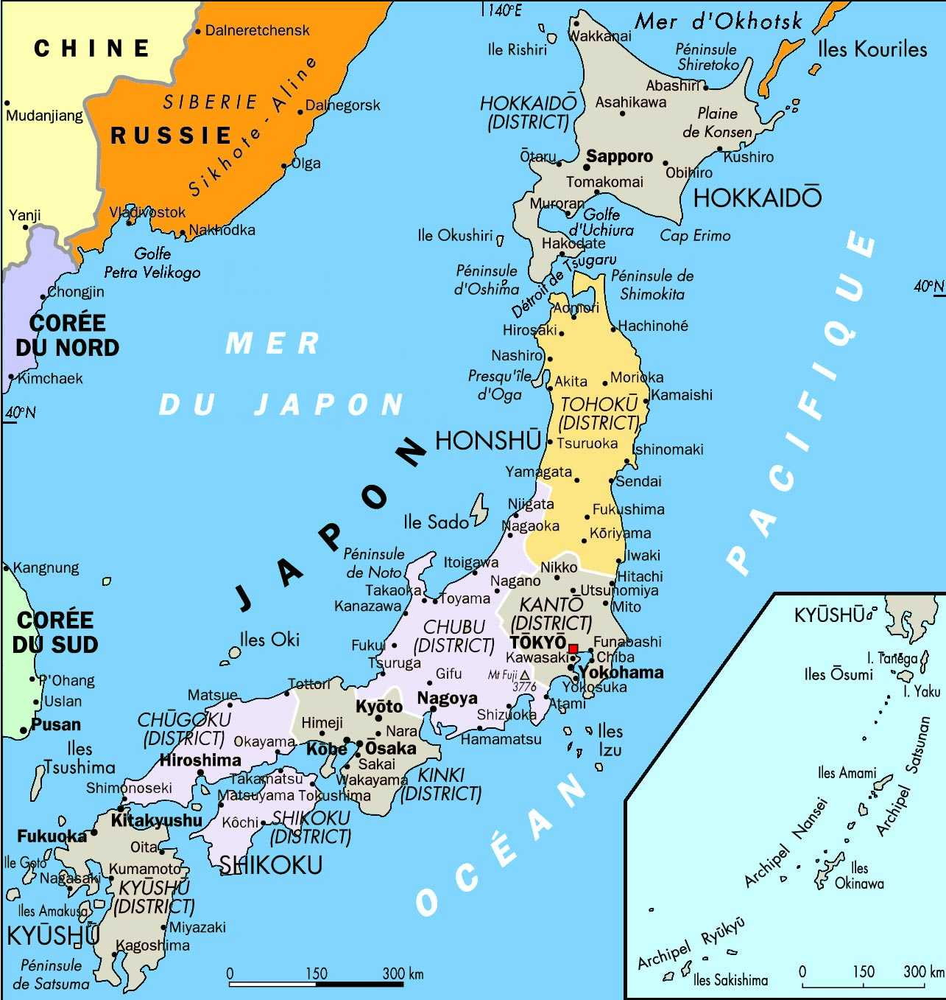
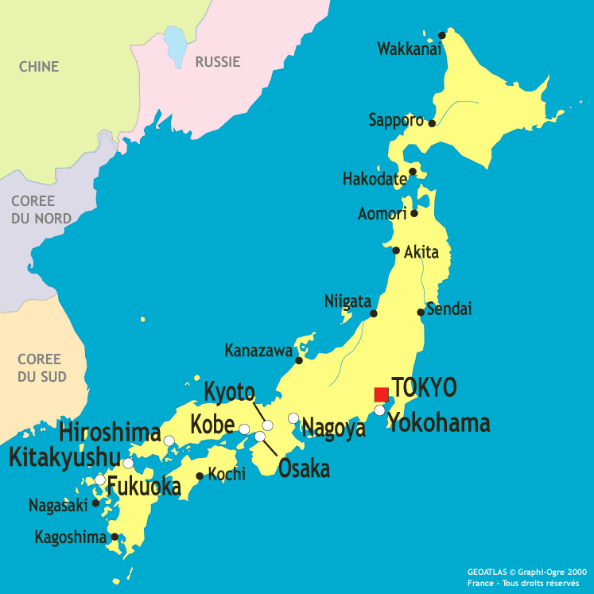

Lieu incontournable
Découvrir un site touristique majeur et des activités associées.
Le Japon est un pays d’Asie de l’Est, connu pour ses traditions, ses villes modernes, ses paysages variés et son patrimoine culturel.


Pour un ressortissant français, aucun visa n’est requis pour un séjour touristique inférieur à 90 jours. Un passeport valide est nécessaire.
Le Japon a connu de grandes périodes historiques marquées par des transformations politiques, sociales et culturelles majeures.
Mise en place du shogunat Tokugawa et stabilité politique durable.
Fin du shogunat et modernisation rapide du pays.
Nouvelle constitution fondée sur la souveraineté du peuple.
Catastrophe majeure ayant marqué durablement le pays.